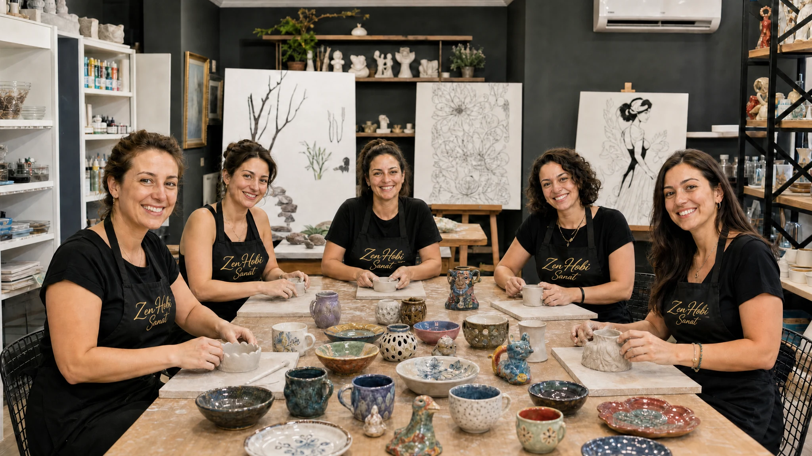
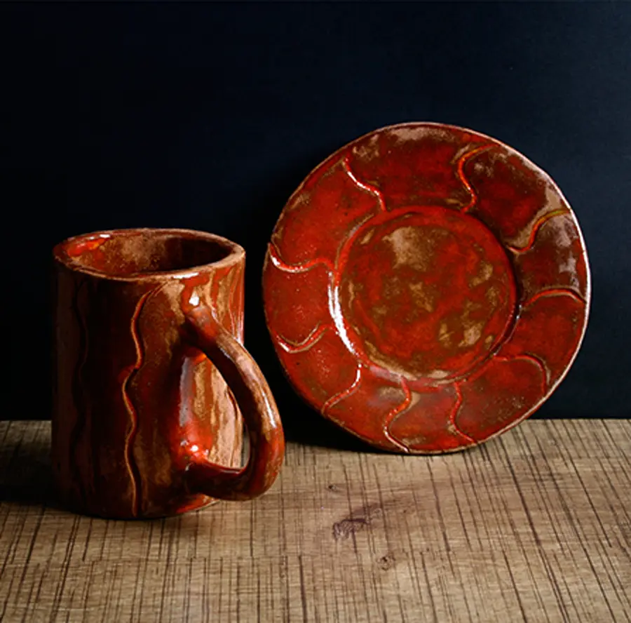
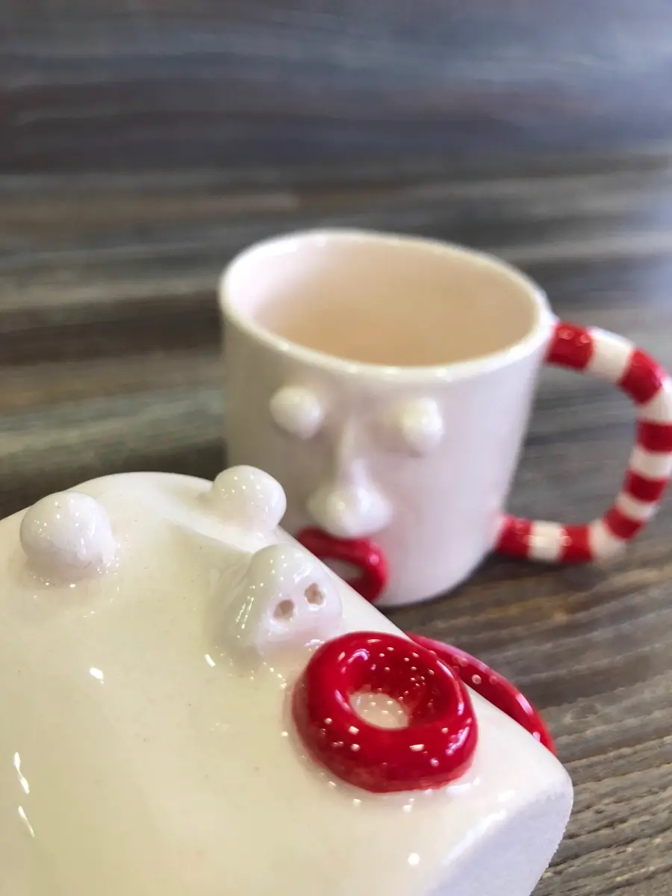

Ceramics Studio
From a handful of clay to a piece you shape with your own hands and take out of the kiln yourself. You'll also learn glazing and firing, experiencing the whole process from start to finish.
Feel the clay take shape in your hands
Ceramics is one of the most calming art forms there is. As you knead and slowly shape the clay with your hands, you learn technique while giving your mind a rest. In our studio, the whole process is with you — from hand-building to glazing to firing.
- Hand-building techniques
- Glazing, colouring and decorating
- Bisque and glaze firing processes
- All materials and aprons provided at the studio
- Beginner and advanced groups
From clay to home: how does the process work?
Each lesson builds on the last; even starting from zero, you'll have your own piece within a few weeks.
1. Hand-Building
Using pinching, coiling and slab techniques, you shape the clay into the form you want, with your instructor beside you at every step.
2. Glazing & Decorating
Once your dried piece comes out of the bisque firing, it meets the glaze in the colour and texture you choose.
3. Firing
Fired twice in our own kiln, it takes on its permanent form. Curious about the process? Take a look at our kiln firing page.
Pieces from this studio
A selection of ceramics made by hand by our students. Every one shaped from scratch, one at a time.
 Face-motif set
Face-motif set
Glazed mug & plate
Face-motif set Patterned vase
Patterned vaseCoffee tastes different when it's drunk from a mug you made with your own hands
That first mug you shaped in the studio doesn't really end once it makes its way through drying, firing and glazing into your hands — it starts over again every morning. One of our students painted her own Halloween-themed mug, and she's been drinking her coffee from it ever since it came out of the kiln — every time she walks into the kitchen, she's holding that very first piece she shaped with her own hands months ago. Pairing something you made with your own hands with a daily ritual is one of the most rewarding ways to bring art into everyday life. For us, that's the best part of running this studio — we're not just handing over a finished piece, we're creating a small moment of happiness someone rediscovers every morning.
What you're wondering
Not at all. Hand-building can feel a little unfamiliar the first time, but our instructor guides your hands the whole way — you'll shape a form even in your very first session.
Ceramics goes through drying, bisque firing, glazing and glaze firing stages. This process usually takes 2–3 weeks, after which your piece is ready.
Yes, we also offer single-session trial workshops. Write to us for details.
Everyday moments from the studio
New pieces, open spots and workshop announcements land on Instagram first. It's the closest thing to the studio's everyday rhythm — come get to know us there too.
Follow on InstagramReady to try our Ceramics Studio?
You'll leave with a piece of your own even in your first lesson. Spots are limited — reserve your day and time now.